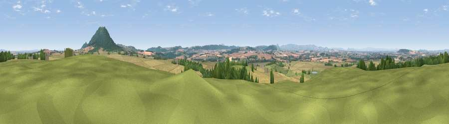

Viewpoint near Eyton on Severn
#11870 in England · top 38% of its area beats it · near Eyton on Severn · access?Where it is
The exact computed spot (SJ 58825 07525). Click the marker for map links.
Public access: no public right of way or access land is recorded at this exact spot — it may be on private land. Computed from Natural England's CRoW access layer and OpenStreetMap rights of way — not the legal definitive map. Always verify locally.
The view, rendered

A 360° render of this exact spot computed from the terrain model, tree cover and land cover — summer colours, afternoon light, calibrated against photographs of famous viewpoints. Real trees, hedges and buildings will differ in detail.
The panorama
Grey silhouette: terrain skyline in each direction (720 bearings, Earth curvature and refraction included). Dashed green: skyline with trees (+15 m) and buildings (+8 m) as obstacles. Blue strip: how far the ground is visible on each bearing.
Where the view opens
Wedge length = distance to the farthest visible ground on that bearing (vegetation-aware). Rings at 10, 25 and 50 km.
What fills the view
55% cropland · 24% grassland · 19% woodland · 1% built-up
Angular shares of the visible panorama (visual magnitude), not map area. Landscape diversity 0.46 (0–1 Shannon).
Key numbers
More beautiful places nearby
The staircase of upgrades: each row has a higher view potential than everything closer. Driving times are estimates from straight-line distance, calibrated against real road routing — check an actual route before setting out.
| Place | Direction | Drive | Score |
|---|---|---|---|
| Viewpoint near Eyton on Severn | SSW · 0 km | ~2 min | 61.1 |
| Little Hill | E · 3 km | ~7 min | 78.2 |
| Viewpoint near Little Wenlock | E · 4 km | ~9 min | 86.6 |
| North Hill | SSE · 64 km | ~87 min | 86.8 |
| Worcestershire Beacon | SSE · 65 km | ~88 min | 87.1 |
| Viewpoint near West Quantoxhead | SSW · 171 km | ~193 min | 87.9 |
| Viewpoint near West Quantoxhead | SSW · 172 km | ~193 min | 88.7 |
| Viewpoint near Finsthwaite | N · 182 km | ~202 min | 90.3 |
52.66387, -2.61024 · source: screening · position refined by local search. Computed location — check access rights before visiting.